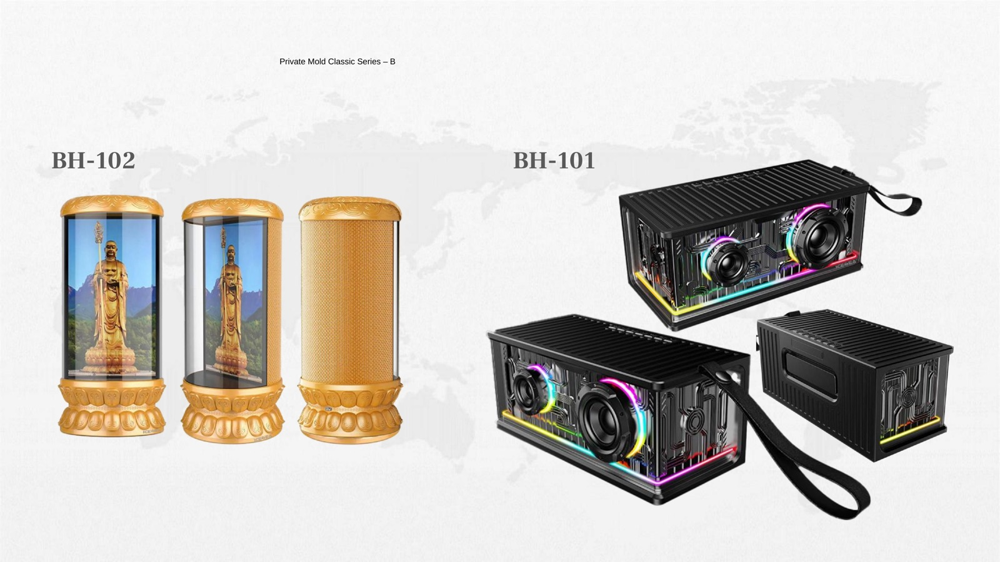

Model reference slide
Use this reference to discuss shell shape, controls, color direction, connection version and sample questions.

Archived product route
TALRIVO is currently focusing public product content on gaming headsets and related audio sample review. For current inquiries, start from the gaming headset collection, sample request page or contact form.
Classic mouse series
BH-101 / BH-102 is a classic mouse series reference kept separate from the BH-101 Bluetooth speaker page, with exact connection and version details to confirm before RFQ. Listed details should be checked against the selected sample version before public listing copy or packaging artwork.

Product summary
BH-101 / BH-102 is a classic mouse series reference kept separate from the BH-101 Bluetooth speaker page, with exact connection and version details to confirm before RFQ.
Listed specifications
This table works as a version-control checklist. Final commercial documents, packaging copy and public product wording should follow the confirmed sample version.
| Series | Private Mold Classic Series B |
|---|---|
| Models | BH-101 / BH-102 mouse series |
| Product role | Mouse series reference |
| Sample status | Confirm exact version details before quotation |
| Branding | Logo, color and packaging questions should be checked by selected version |
Product image evidence
The current image is used as a product reference from the PPT. When new high-resolution lifestyle or studio photos are available, this page can be upgraded without changing the URL.
Use this reference to discuss shell shape, controls, color direction, connection version and sample questions.
Buyer fit
Sample checklist
Confirm whether the required sample is wired, single 2.4G, Bluetooth, dual-mode or three-mode before quotation.
Check the selected sensor, DPI steps, button count, wheel structure and button feel on the physical sample.
Confirm AA, AAA, lithium, 14500, 18650-type battery direction or wired USB structure by model version.
Discuss logo area, color direction, packaging artwork, manual language and accessory set after the base sample is selected.
Related pages
FAQ
BH-101 / BH-102 Mouse Series is a classic mouse reference for reviewing connection direction, shell shape and sample evaluation points before RFQ.
Confirm the exact sample version, connection mode, sensor, DPI, buttons, battery or cable route, shell finish, color direction, logo area, packaging direction and required documents before quotation.
No. Public pricing and MOQ are not published because quotation details depend on selected version, project scope, quantity range, branding, packaging and destination market.
Share your target market, sales channel, preferred model version, connection direction, color direction, quantity range, sample timing and packaging questions.